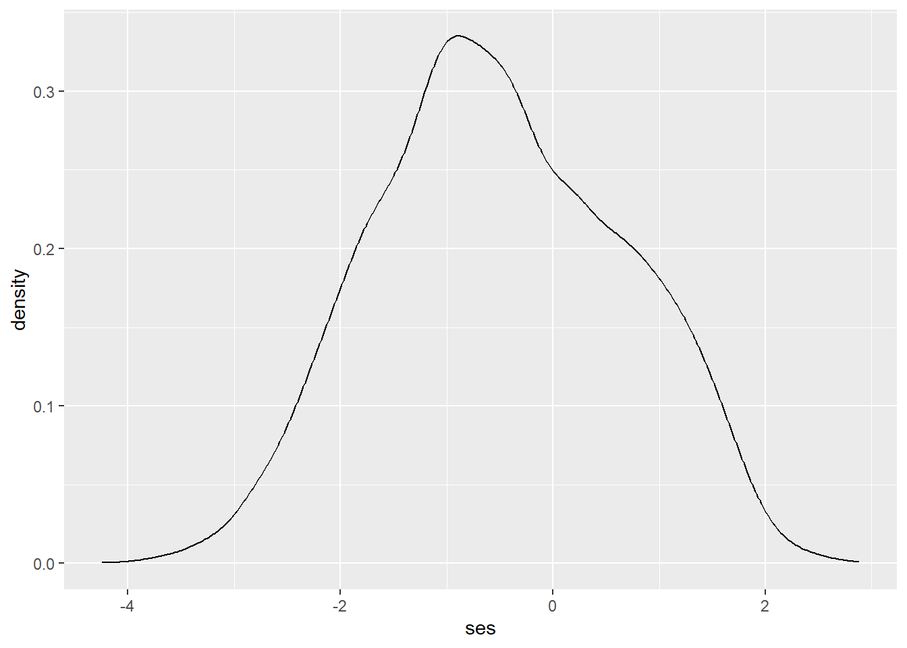
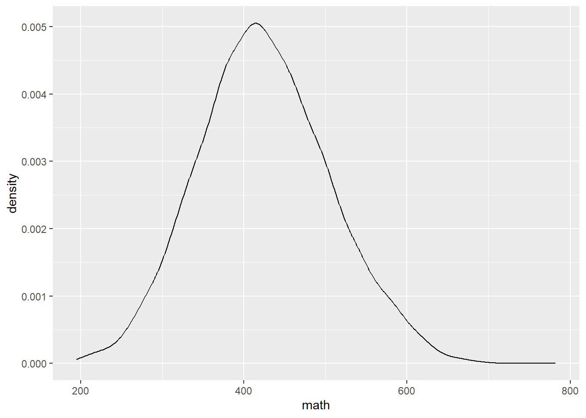
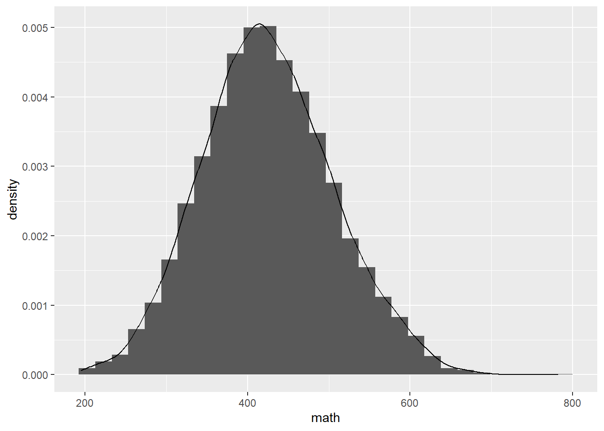
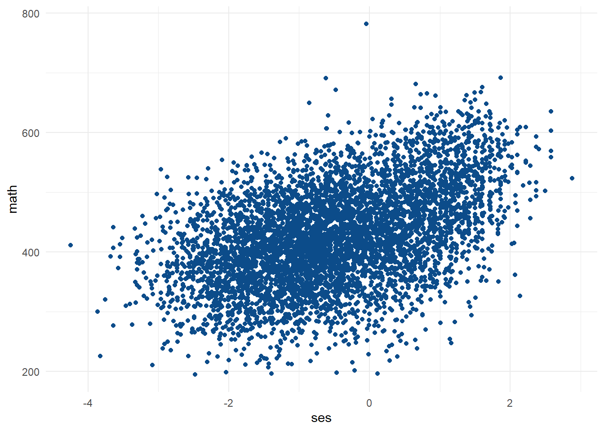
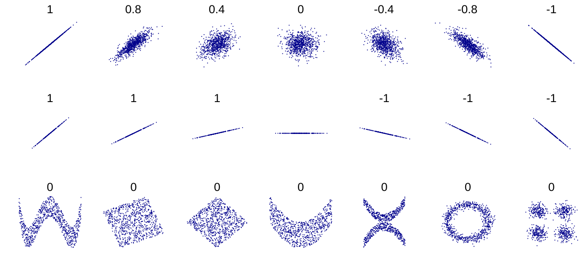
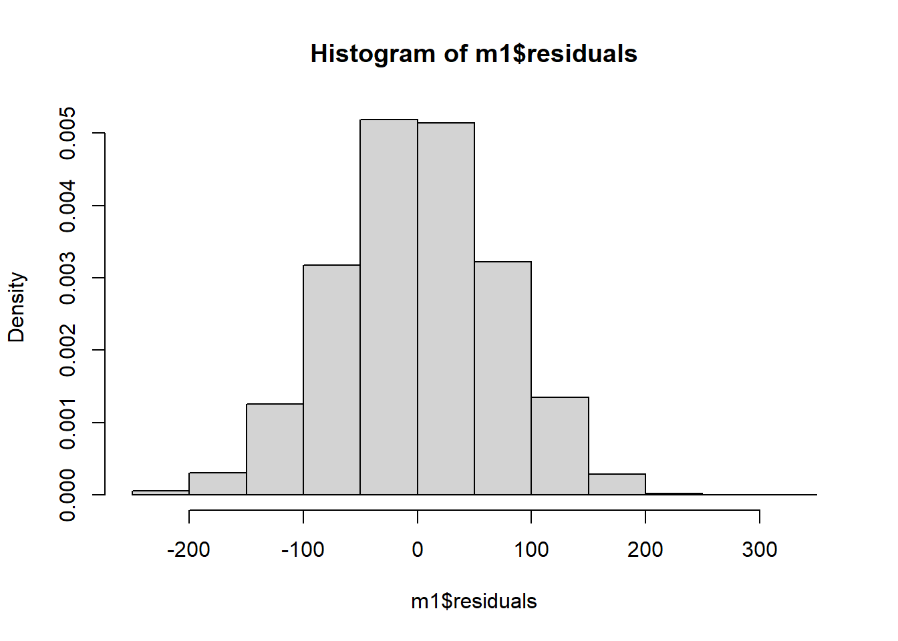
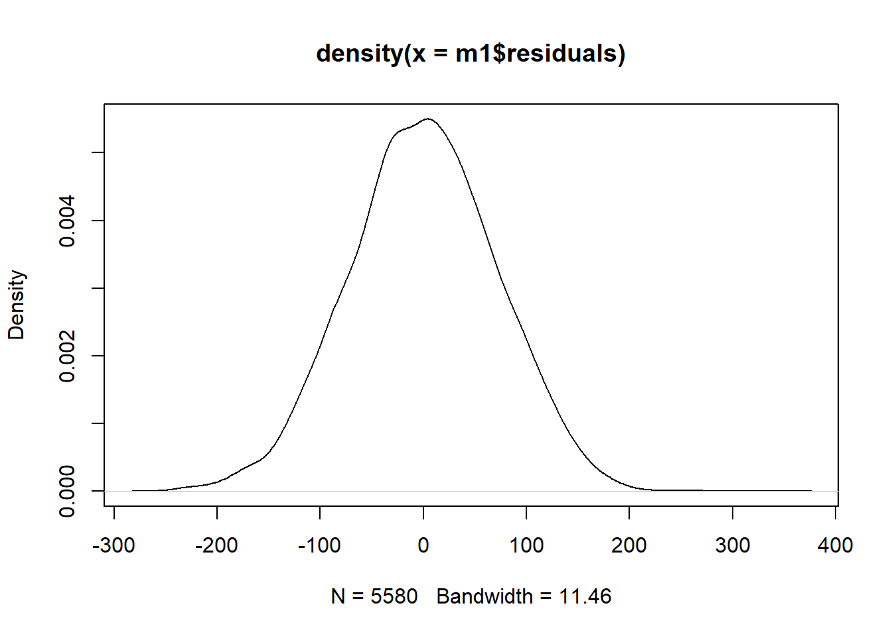
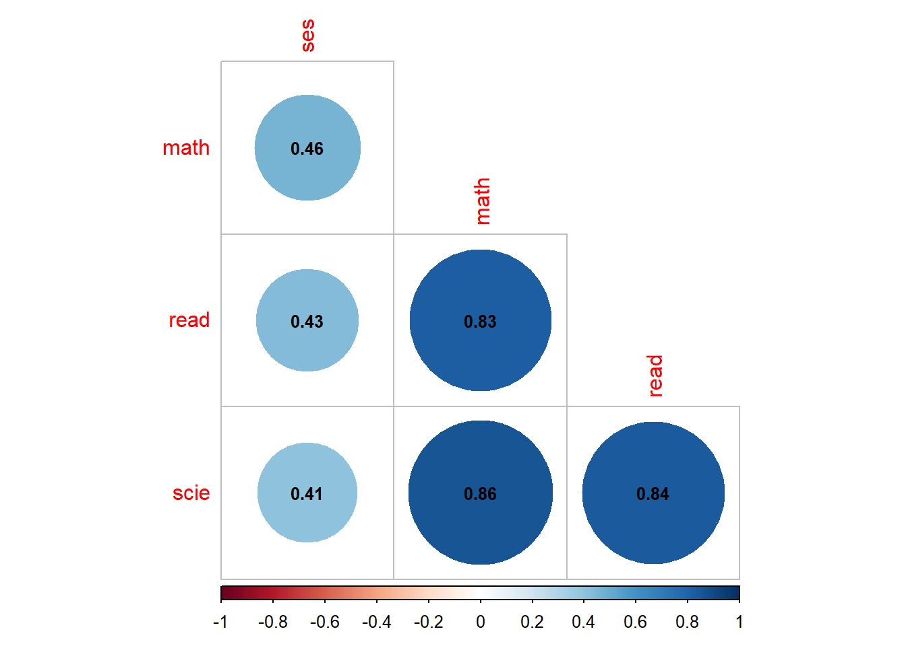
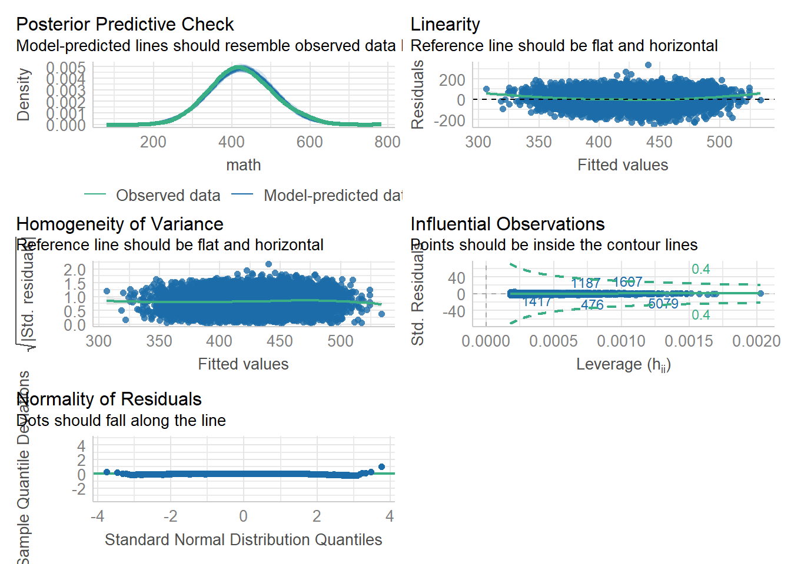

getwd()[1] "G:/Mi unidad/Teaching/Metodología Cuantitativa II 2024/Sesión 3"setwd("G:/Mi unidad/Teaching/Metodología Cuantitativa II 2024/Sesión 3") # Cambia esta línea de código por tu directorio de trabajo
En esta sesión, aprenderás a realizar un análisis de regresión lineal simple y múltiple utilizando datos de PISA 2009 para Chile. Exploraremos cómo evaluar los supuestos del modelo de regresión, interpretar los resultados y visualizar las relaciones entre las variables. También, discutiremos cómo comparar diferentes modelos de regresión y cómo interpretar la importancia relativa de los predictores.
Al igual que en las sesiones previas, es importante comenzar estableciendo el directorio de trabajo, la cual refiere a la carpeta de tu computador donde se encuentran los datos que vamos a analizar.
getwd()[1] "G:/Mi unidad/Teaching/Metodología Cuantitativa II 2024/Sesión 3"setwd("G:/Mi unidad/Teaching/Metodología Cuantitativa II 2024/Sesión 3") # Cambia esta línea de código por tu directorio de trabajoAprenderemos una forma alternativa de instalar y cargar paquetes usando pacman. El código a continuación verifica si el paquete pacman está instalado y, si no lo está, lo instala. Luego, instala y carga todos los paquetes mencionados utilizando pacman::p_load, que instala y carga automáticamente cualquier paquete que no esté ya instalado. Siempre puedes también ocupar las funciones de R base de install.packages() y library(), aunque como ves esta es una alternativa más fácil de leer, especialente cuando trabajas con muchos paquetes.
if(!require(pacman)) install.packages("pacman")Loading required package: pacmanpacman::p_load(haven,
ggplot2,
gmodels,
psych,
corrplot,
lmtest,
broom,
relaimpo,
visreg,
performance,
see,
patchwork,
knitr,
car)A continuación, importamos los datos de PISA 2009 para Chile. Utilizaremos el paquete haven para manejar los archivos SPSS (.sav).
pisa2009_chl <- read_sav("pisa2009_chl.sav")Antes de proceder al análisis, es importante entender la estructura y el contenido del conjunto de datos.
class(pisa2009_chl) # Verifica la clase del objeto 'pisa2009_chl'[1] "tbl_df" "tbl" "data.frame"head(pisa2009_chl) # Muestra los primeros 6 casos de la base de datos# A tibble: 6 × 13
ctry school id sex ses sesj math read scie type
<chr+lbl> <chr> <chr> <dbl+lbl> <dbl+lbl> <dbl+l> <dbl> <dbl> <dbl> <dbl+lb>
1 152 [CHL] 00001 00003 1 [Female] -0.291 -1.45 414. 534. 480. NA
2 152 [CHL] 00001 00002 1 [Female] -0.798 -1.45 347. 396. 414. NA
3 152 [CHL] 00001 00005 1 [Female] -2.55 -1.45 391. 457. 392. NA
4 152 [CHL] 00001 00001 1 [Female] -2.31 -1.45 417. 451. 408. NA
5 152 [CHL] 00001 00004 1 [Female] -1.32 -1.45 422. 460. 438. NA
6 152 [CHL] 00002 00016 1 [Female] -0.266 -0.674 403. 491. 495. 2 [Pri…
# ℹ 3 more variables: public <dbl+lbl>, subv <dbl+lbl>, priv <dbl+lbl>names(pisa2009_chl) # Lista los nombres de las variables [1] "ctry" "school" "id" "sex" "ses" "sesj" "math" "read"
[9] "scie" "type" "public" "subv" "priv" dim(pisa2009_chl) # Muestra el número de variables y casos[1] 5669 13summary(pisa2009_chl) # Proporciona un resumen estadístico para cada variable ctry school id sex
Length:5669 Length:5669 Length:5669 Min. :0.0000
Class :character Class :character Class :character 1st Qu.:0.0000
Mode :character Mode :character Mode :character Median :0.0000
Mean :0.4937
3rd Qu.:1.0000
Max. :1.0000
ses sesj math read
Min. :-4.2451 Min. :-2.680900 Min. :194.7 Min. :145.8
1st Qu.:-1.3480 1st Qu.:-1.089056 1st Qu.:370.0 1st Qu.:397.2
Median :-0.5661 Median :-0.770568 Median :421.3 Median :455.2
Mean :-0.5056 Mean :-0.509685 Mean :424.8 Mean :453.5
3rd Qu.: 0.3615 3rd Qu.: 0.009215 3rd Qu.:477.6 3rd Qu.:509.3
Max. : 2.8814 Max. : 1.538684 Max. :782.1 Max. :711.0
NA's :89 NA's :1
scie type public subv
Min. :144.3 Min. :1.000 Min. :0.0000 Min. :0.0000
1st Qu.:394.7 1st Qu.:1.000 1st Qu.:0.0000 1st Qu.:0.0000
Median :450.1 Median :2.000 Median :0.0000 Median :0.0000
Mean :451.6 Mean :1.559 Mean :0.4778 Mean :0.4852
3rd Qu.:505.2 3rd Qu.:2.000 3rd Qu.:1.0000 3rd Qu.:1.0000
Max. :730.8 Max. :3.000 Max. :1.0000 Max. :1.0000
NA's :1188 NA's :1188 NA's :1188
priv
Min. :0.000
1st Qu.:0.000
Median :0.000
Mean :0.037
3rd Qu.:0.000
Max. :1.000
NA's :1188 str(pisa2009_chl) # Muestra la estructura interna del data frametibble [5,669 × 13] (S3: tbl_df/tbl/data.frame)
$ ctry : chr+lbl [1:5669] 152, 152, 152, 152, 152, 152, 152, 152, 152, 152, 152...
..@ label : chr "Country code ISO 3-digit"
..@ format.spss : chr "A3"
..@ display_width: int 9
..@ labels : Named chr "152"
.. ..- attr(*, "names")= chr "CHL"
$ school: chr [1:5669] "00001" "00001" "00001" "00001" ...
..- attr(*, "label")= chr "School ID 5-digit"
..- attr(*, "format.spss")= chr "A5"
..- attr(*, "display_width")= int 10
$ id : chr [1:5669] "00003" "00002" "00005" "00001" ...
..- attr(*, "label")= chr "Student ID 5-digit"
..- attr(*, "format.spss")= chr "A5"
..- attr(*, "display_width")= int 9
$ sex : dbl+lbl [1:5669] 1, 1, 1, 1, 1, 1, 1, 1, 1, 1, 1, 1, 1, 1, 1, 1, 1, 1,...
..@ label : chr "Sex"
..@ format.spss : chr "F1.0"
..@ display_width: int 9
..@ labels : Named num [1:2] 0 1
.. ..- attr(*, "names")= chr [1:2] "Male" "Female"
$ ses : dbl+lbl [1:5669] -0.2907, -0.7978, -2.5471, -2.3071, -1.3214, -0.2655,...
..@ label : chr "Index of economic, social and cultural status (WLE)"
..@ format.spss : chr "F8.2"
..@ display_width: int 12
..@ labels : Named num -999
.. ..- attr(*, "names")= chr "missing"
$ sesj : dbl+lbl [1:5669] -1.453, -1.453, -1.453, -1.453, -1.453, -0.674, -0.67...
..@ label : chr "school ses"
..@ format.spss : chr "F8.2"
..@ display_width: int 10
..@ labels : Named num -999
.. ..- attr(*, "names")= chr "missing"
$ math : num [1:5669] 414 347 391 417 422 ...
..- attr(*, "label")= chr "Plausible value in math"
..- attr(*, "format.spss")= chr "F8.2"
..- attr(*, "display_width")= int 11
$ read : num [1:5669] 534 396 457 451 460 ...
..- attr(*, "label")= chr "Plausible value in reading"
..- attr(*, "format.spss")= chr "F8.1"
..- attr(*, "display_width")= int 11
$ scie : num [1:5669] 480 414 392 408 438 ...
..- attr(*, "label")= chr "Plausible value in science"
..- attr(*, "format.spss")= chr "F8.2"
..- attr(*, "display_width")= int 11
$ type : dbl+lbl [1:5669] NA, NA, NA, NA, NA, 2, 2, 2, 2, 2, 2, 2, 2, ...
..@ label : chr "School Type"
..@ format.spss : chr "F1.0"
..@ display_width: int 9
..@ labels : Named num [1:4] -999 1 2 3
.. ..- attr(*, "names")= chr [1:4] "missing" "Public" "Private government-dependent" "Private independent"
$ public: dbl+lbl [1:5669] NA, NA, NA, NA, NA, 0, 0, 0, 0, 0, 0, 0, 0, ...
..@ label : chr "public schools = 1, else = 0"
..@ format.spss : chr "F8.2"
..@ display_width: int 10
..@ labels : Named num [1:3] -999 0 1
.. ..- attr(*, "names")= chr [1:3] "missing" "else" "public"
$ subv : dbl+lbl [1:5669] NA, NA, NA, NA, NA, 1, 1, 1, 1, 1, 1, 1, 1, ...
..@ label : chr "subv schools = 1, else = 0"
..@ format.spss : chr "F8.2"
..@ display_width: int 10
..@ labels : Named num [1:3] -999 0 1
.. ..- attr(*, "names")= chr [1:3] "missing" "else" "subv"
$ priv : dbl+lbl [1:5669] NA, NA, NA, NA, NA, 0, 0, 0, 0, 0, 0, 0, 0, ...
..@ label : chr "priv schools = 1, else = 0"
..@ format.spss : chr "F8.2"
..@ display_width: int 10
..@ labels : Named num [1:3] -999 0 1
.. ..- attr(*, "names")= chr [1:3] "missing" "else" "priv"Comenzamos con el análisis descriptivo del Índice de Estatus Económico, Social y Cultural (ESCS, por sus siglas en inglés en PISA) o simplemente estatus socioeconómico del estudiantes (ses) y del puntaje en matemáticas (math).
pisa2009_chl$ses <- as.numeric(pisa2009_chl$ses)
summary(pisa2009_chl$ses) # Resumen descriptivo de SES Min. 1st Qu. Median Mean 3rd Qu. Max. NA's
-4.2451 -1.3480 -0.5661 -0.5056 0.3615 2.8814 89 sd(pisa2009_chl$ses, na.rm = TRUE) # Desviación estándar de SES[1] 1.164141var(pisa2009_chl$ses, na.rm = TRUE) # Varianza de SES[1] 1.355225describe(pisa2009_chl$ses) vars n mean sd median trimmed mad min max range skew kurtosis se
X1 1 5580 -0.51 1.16 -0.57 -0.51 1.25 -4.25 2.88 7.13 0.05 -0.57 0.02summary(pisa2009_chl$math) # Resumen descriptivo de math Min. 1st Qu. Median Mean 3rd Qu. Max.
194.7 370.0 421.3 424.8 477.6 782.1 sd(pisa2009_chl$math, na.rm = TRUE) # Desviación estándar de math[1] 80.51892var(pisa2009_chl$math, na.rm = TRUE) # Varianza de math[1] 6483.297describe(pisa2009_chl$math) vars n mean sd median trimmed mad min max range skew
X1 1 5669 424.82 80.52 421.26 423.32 79.45 194.74 782.06 587.32 0.17
kurtosis se
X1 -0.07 1.07Para entender mejor la distribución de los datos, generamos varios gráficos usando el paquete ggplot2.
# Histograma de SES
ggplot(pisa2009_chl, aes(x = ses)) +
geom_histogram()`stat_bin()` using `bins = 30`. Pick better value with `binwidth`.Warning: Removed 89 rows containing non-finite outside the scale range
(`stat_bin()`).
# Gráfico de Densidad de SES
ggplot(pisa2009_chl, aes(x = ses)) +
geom_density()Warning: Removed 89 rows containing non-finite outside the scale range
(`stat_density()`).
# Histograma y Densidad combinados
ggplot(pisa2009_chl, aes(x = ses)) +
geom_histogram(aes(y = ..density..)) +
geom_density()Warning: The dot-dot notation (`..density..`) was deprecated in ggplot2 3.4.0.
ℹ Please use `after_stat(density)` instead.`stat_bin()` using `bins = 30`. Pick better value with `binwidth`.Warning: Removed 89 rows containing non-finite outside the scale range
(`stat_bin()`).Warning: Removed 89 rows containing non-finite outside the scale range
(`stat_density()`).
# Histograma de Math
ggplot(pisa2009_chl, aes(x = math)) +
geom_histogram()`stat_bin()` using `bins = 30`. Pick better value with `binwidth`.# Gráfico de Densidad de Math
ggplot(pisa2009_chl, aes(x = math)) +
geom_density()
# Histograma y Densidad combinados
ggplot(pisa2009_chl, aes(x = math)) +
geom_histogram(aes(y = ..density..)) +
geom_density()`stat_bin()` using `bins = 30`. Pick better value with `binwidth`.
Realizaremos una regresión lineal simple para predecir el puntaje en matemáticas (math) utilizando el índice de estatus socioeconómico como predictor.
m1 <- lm(math ~ ses, data = pisa2009_chl)
summary(m1)
Call:
lm(formula = math ~ ses, data = pisa2009_chl)
Residuals:
Min 1Q Median 3Q Max
-248.82 -47.51 0.17 48.69 341.76
Coefficients:
Estimate Std. Error t value Pr(>|t|)
(Intercept) 441.7171 1.0435 423.30 <2e-16 ***
ses 31.8753 0.8223 38.77 <2e-16 ***
---
Signif. codes: 0 '***' 0.001 '**' 0.01 '*' 0.05 '.' 0.1 ' ' 1
Residual standard error: 71.5 on 5578 degrees of freedom
(89 observations deleted due to missingness)
Multiple R-squared: 0.2122, Adjusted R-squared: 0.2121
F-statistic: 1503 on 1 and 5578 DF, p-value: < 2.2e-16Es fundamental evaluar los supuestos estadísticos del modelo de regresión para asegurarnos de que los resultados sean válidos.
ses (Índice de Estatus Económico, Social y Cultural) y la variable dependiente math (Puntaje en Matemáticas).ggplot(pisa2009_chl) +
aes(x = ses, y = math) +
geom_point(colour = "#0c4c8a") +
theme_minimal()Warning: Removed 89 rows containing missing values or values outside the scale range
(`geom_point()`).
Interpretación: Si los puntos en el gráfico muestran una tendencia a alinearse en una línea recta (ascendente o descendente), podemos asumir que la relación es aproximadamente lineal. Si los puntos siguen una forma curvilínea, la relación podría no ser lineal, lo que sugeriría la necesidad de transformar las variables o considerar un modelo diferente.

Supuesto de Normalidad de los Residuos El supuesto de normalidad de los residuos indica que los errores del modelo (es decir, las diferencias entre los valores observados y los valores predichos) deben distribuirse normalmente. Esto es crucial para validar las pruebas de significancia estadística (prueba t de Student) que se utiliza en la regresión. Para evaluar este supuesto, utilizamos varias aproximaciones:
hist(m1$residuals, freq = FALSE)
plot(density(m1$residuals))
qqnorm(m1$residuals, main = 'Gráfico Cuantil-Cuantil')
qqline(m1$residuals)
shapiro.test(m1$residuals[0:5000])
Shapiro-Wilk normality test
data: m1$residuals[0:5000]
W = 0.99936, p-value = 0.07203Para evaluar este supuesto, utilizamos el test de Breusch-Pagan, que es una prueba estadística que evalúa la presencia de heterocedasticidad. Si el test de Breusch-Pagan indica Un valor p > .05, entonces este sugiere que no se puede rechazar la hipótesis nula de homocedasticidad, indicando que la varianza de los residuos es constante. Si el valor p es menor a 0.05, hay evidencia de heterocedasticidad, lo que podría requerir la transformación de variables o el uso de un modelo robusto.
bptest(math ~ ses, data = pisa2009_chl)
studentized Breusch-Pagan test
data: math ~ ses
BP = 26.143, df = 1, p-value = 3.17e-07A continuación, realizamos una regresión lineal múltiple, agregando más predictores al modelo.
# Recodificación de la variable sexo
pisa2009_chl$female <- as.numeric(pisa2009_chl$sex)
pisa2009_chl$female[pisa2009_chl$female == 0] <- 0
pisa2009_chl$female[pisa2009_chl$female == 1] <- 1
m2 <- lm(math ~ ses + female + read + scie, data = pisa2009_chl)
summary(m2)
Call:
lm(formula = math ~ ses + female + read + scie, data = pisa2009_chl)
Residuals:
Min 1Q Median 3Q Max
-124.217 -23.367 0.453 23.630 150.240
Coefficients:
Estimate Std. Error t value Pr(>|t|)
(Intercept) 49.51870 3.17913 15.58 <2e-16 ***
ses 6.11399 0.45122 13.55 <2e-16 ***
female -27.48366 1.00307 -27.40 <2e-16 ***
read 0.43488 0.01136 38.28 <2e-16 ***
scie 0.43103 0.01114 38.68 <2e-16 ***
---
Signif. codes: 0 '***' 0.001 '**' 0.01 '*' 0.05 '.' 0.1 ' ' 1
Residual standard error: 35.17 on 5575 degrees of freedom
(89 observations deleted due to missingness)
Multiple R-squared: 0.8094, Adjusted R-squared: 0.8093
F-statistic: 5920 on 4 and 5575 DF, p-value: < 2.2e-16Podemos evaluar la presencia de multicolinealidad en un modelo de regresión generando una matriz de correlación de los predictores puede dar una idea inicial sobre las relaciones bivariadas entre ellos. Observamos si hay correlaciones altas (generalmente r > 0.8 o < -0.8) entre dos variables predictoras pueden ser una indicador de multicolinealidad.
data <- pisa2009_chl[, c("math", "ses", "read", "scie")]
correlaciones <- cor(data, use = "complete.obs")
# Visualizar la matriz de correlación usando un correlograma
corrplot(correlaciones, method = 'circle', type = 'lower', insig = 'blank',
addCoef.col = 'black', number.cex = 0.8, order = 'AOE', diag = FALSE)
También, podemos estimar el factor de inflación de la varianza (VIF). El VIF mide cuánto la varianza de un coeficiente de regresión está inflada debido a la multicolinealidad. Un VIF de 1 indica que no hay correlación entre la variable predictora y las demás variables predictoras. Un VIF entre 1 y 5 sugiere una correlación moderada pero aceptable. Un VIF mayor que 5 (algunos usan el umbral de 10) indica una alta multicolinealidad que podría ser problemática.
kable(vif(m2), digits = 2)| x | |
|---|---|
| ses | 1.24 |
| female | 1.13 |
| read | 3.94 |
| scie | 3.77 |
Interpretación: Si alguna de las variables en el modelo tiene un VIF alto (por ejemplo, mayor a 5), esto indica que la variable está altamente correlacionada con una o más de las otras variables predictoras, lo que sugiere multicolinealidad.
¿Qué hacer si hay multicolinealidad? - Eliminar una de las variables correlacionadas: Si dos variables están altamente correlacionadas, podrías considerar eliminar una de ellas para reducir la multicolinealidad. - Transformar las variables: En algunos casos, la transformación de las variables (por ejemplo, usando logaritmos o diferencias) puede reducir la multicolinealidad.
Esta función obtiene gráficos de diagnóstico para chequear supuestos.
check_model(m1)
Comparación de Modelos Finalmente, comparamos los dos modelos de regresión para determinar cuál ajusta mejor los datos.
anova(m1, m2)Analysis of Variance Table
Model 1: math ~ ses
Model 2: math ~ ses + female + read + scie
Res.Df RSS Df Sum of Sq F Pr(>F)
1 5578 28513803
2 5575 6897626 3 21616176 5823.8 < 2.2e-16 ***
---
Signif. codes: 0 '***' 0.001 '**' 0.01 '*' 0.05 '.' 0.1 ' ' 1Importancia Relativa de los Predictores Calculamos la importancia relativa de cada predictor en el modelo de regresión múltiple.
calc.relimp(m2, type = c("lmg", "last", "first", "pratt"), rela = TRUE)Response variable: math
Total response variance: 6487.868
Analysis based on 5580 observations
4 Regressors:
ses female read scie
Proportion of variance explained by model: 80.94%
Metrics are normalized to sum to 100% (rela=TRUE).
Relative importance metrics:
lmg last first pratt
ses 0.09538154 0.04712198 0.12826346 0.05029273
female 0.03280761 0.19267618 0.01166592 0.02928425
read 0.42029914 0.37617459 0.41469487 0.45443514
scie 0.45151171 0.38402725 0.44537575 0.46598788
Average coefficients for different model sizes:
1X 2Xs 3Xs 4Xs
ses 31.8752522 16.5316474 7.7593596 6.1139866
female -22.3815763 -25.7060191 -27.3885498 -27.4836607
read 0.8112476 0.6533462 0.5299906 0.4348758
scie 0.8421612 0.7226368 0.5842692 0.4310344